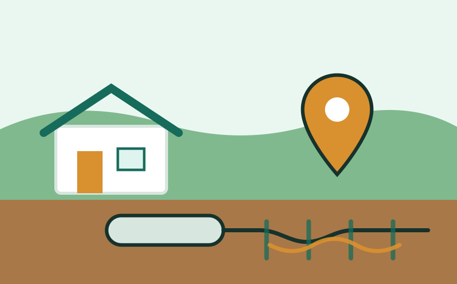

Perris septic service requests
Septic Tank Pumping & Service Requests in Perris, CA
Septic backup, odors, slow drains, or tank pumping needed? Call or submit a request for septic service help in Perris and nearby areas.
Perris Septic Help collects septic service requests and helps route them to local septic providers when available.
Prefer to call? (951) 625-1510
Services
Septic service requests for Perris-area properties
Tell us what is happening at the property and this intake site can help route your septic pumping, cleaning, backup, odor, inspection, or drain field request toward local septic providers when available.
Local septic intake
Built for Perris septic pumping, backup, odor, and inspection requests
Septic problems can affect drains, bathrooms, yards, and daily use of a home or property. Perris Septic Help gives local residents one straightforward place to request help for septic tank pumping, septic tank cleaning, septic backups, septic odors, slow drains, inspection requests, and drain field or leach field concerns.
Use the septic intake line or online request form to share the property location, callback number, issue details, access notes, and preferred timing. Your request may be reviewed and routed to a local septic provider when available.
Nearby areas
Perris and nearby Riverside County communities
This septic request/intake site focuses on Perris and nearby communities. Availability can vary by exact address, provider schedule, property access, tank location, and requested service type.
Property service details
Helpful information for septic providers reviewing requests
Clear request notes can help a provider understand the situation before following up. Include whether you need septic pumping, cleaning, backup help, odor help, an inspection request, or drain field service help. Mention slow drains, gurgling, sewage smells, standing water, soggy soil, access limitations, gate codes, pets, and whether tank lids are visible.
Perris Septic Help does not perform septic work. This website collects service requests and helps route them to local septic providers when available. Provider response, scheduling, estimates, payment, and service terms are handled directly by the provider.

How It Works
A simple septic service request process
Request septic help
Tell us what septic issue you’re dealing with.
Call the septic intake line or use the form to submit septic pumping, cleaning, backup, odor, inspection, slow drain, drain field, or leach field service request details.
Prefer to call? (951) 625-1510
FAQ